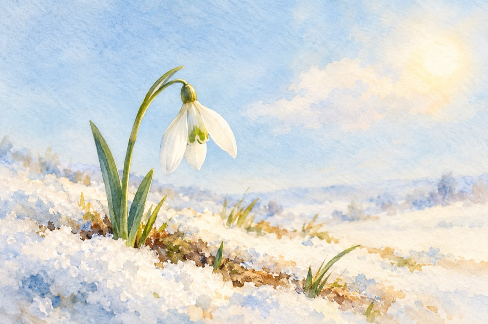

Ghiocelul
Dedic acest Mărțișor nepoatei mele, Elena, fiicei mele, Loredana, și tuturor copiilor și mamelor din țara noastră. La Arad.
Picătură de zăpadă
Ai căzut oare din cer?
Floare mică și plăpândă
Al naturii giuvaer!
Am acum de tine parte
De-un clinchet de clopoțel,
În ziua de unu’ martie,
Micuțule ghiocel!...
Să te pun la butonieră
Să vadă zăpezile
C-ai sosit, e primăvară!...
Plecați voi, nămeților,
Că vă prinde soarele!
Vasile Groza
Apare și în: Privește-mă în ochi (2015), Poezii cu animale.